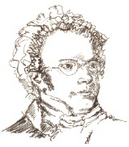

1827’de Ludwig van Beethoven’ın cenazesinde Franz Schubert (1797-1828), sandığından daha fazla sembolizm yüklü bir hâlde, bir matem günü meşalesi taşıdı. Ateşi daha önce sönüp kül olan, gönülden bağlı, eziyet gören romantik besteci geleneğini sürdürerek bir yıl sonra o da öldü.

Viyana’nın dış mahallesi Lichtenthal’de doğan Schubert, genç bir çocukken Mozart’ın ana rakibi ve Beethoven’ın öğretmenlerinden biri olan Antonio Salieri ile keman, şarkıcılık ve piyano çalıştı. Schubert, beste yapmaya takıntılıydı ve her gün uzun saatler yalnız oturarak ve yazarak geçirirdi. Babası, müzik öğretmeniydi ve Franz’ı da öyle olması için zorladı. Franz, babasının baskısına boyun eğdi ve 1813’te bir öğretmen oldu ama zamanının çoğunu, sadece işini bölmeye cüret edecek bir öğrenciyi yetiştirmek için durarak, beste yaparak geçirdi.
Schubert, pek çok romantik gibi bir senfoni ustası değildi. Senfoni yerine, Alman romantik sanat şarkı ve türkü geleneğine yöneldi. Schubert yaşamı boyunca, Johann Wolfgang von Goethe tarafından yazılan bir şiire dayanan, ortaya çıkışı küçük bir çocuğun ölümünü önceden haber veren bir cüce kral hakkında karanlık ve korkutucu bir şarkı olan Der Erlkönig (Gürgen Kralı)(1820) parçasının da içinde olduğu altı yüzün üzerinde türkü besteledi. Winterreise (1827) şarkı döngüsü, Schubert’in en güzel eseri kabul edilir.
Schubert, tipik bir romantik çağ bohemiydi. Tüm yaşamı boyunca fakir, ama müziğe adanmış olarak hak ettiklerinden çok daha az bir fiyata bir düzine şarkısını geçinmek için sattı. Schubert, her sabah saatlerce beste yapar, akşamlarınıysa kendilerine Schubertianlar diyen bir grup yakın arkadaşıyla geçirirdi. Viyana’nın kafelerinde ve bira bahçelerinde Schubert’in en son eserlerini icra eder, şiir okur ve çok içerlerdi.
Schubert, ne yakışıklıydı ne de kadınlarla özellikle ilgiliydi, ama 1822’de Orta Avrupa’nın fahişeleri arasında yaygın bir hastalık olan frengiye yakalanmıştı. Yaratıcı enerjisinin olgunlaşmasından çok daha önce, otuz bir yaşında öldü.
EK BİLGİLER:
1. 1823’te Schubert meşhur “Bitmeyen Senfoni” eseri üzerinde çalışmaya başladı. Öldüğü zaman bir arkadaşı, Anselm Hüttenbrenner, elyazmalarını otuz yedi yıl sakladı. 1865’te Viyana’da ilk sahnelendiğinde coşkuyla karşılandı.
2. Schubert, çoğunlukla arkadaşlarından borç para alırdı ve onların evlerinde yaşardı. Neredeyse hiçbir zaman kendi meskenine sahip olmadı.
3. Schubert, Goethe ve Wilhelm Müller’in de içinde olduğu diğer çağdaş Alman şairlerinin şiirlerini sanat şarkılarının temeli olarak kullandı.